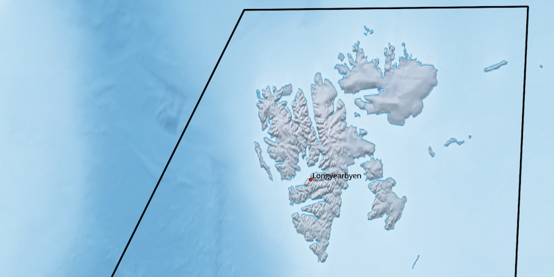
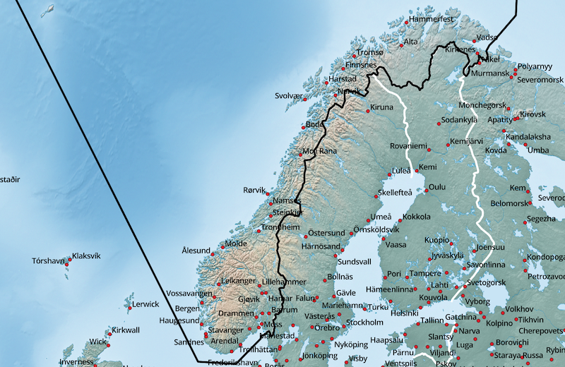
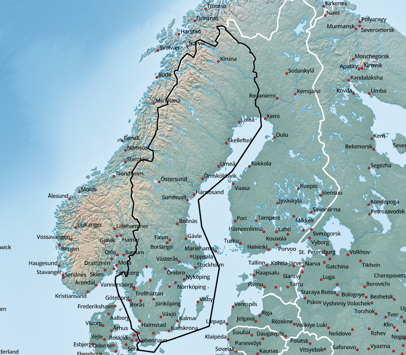
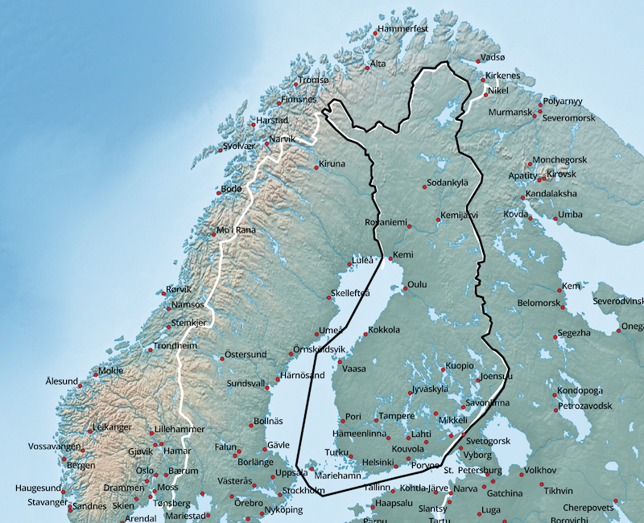
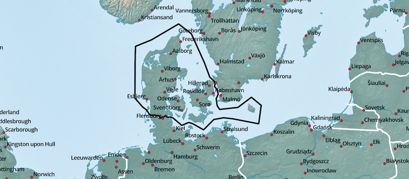
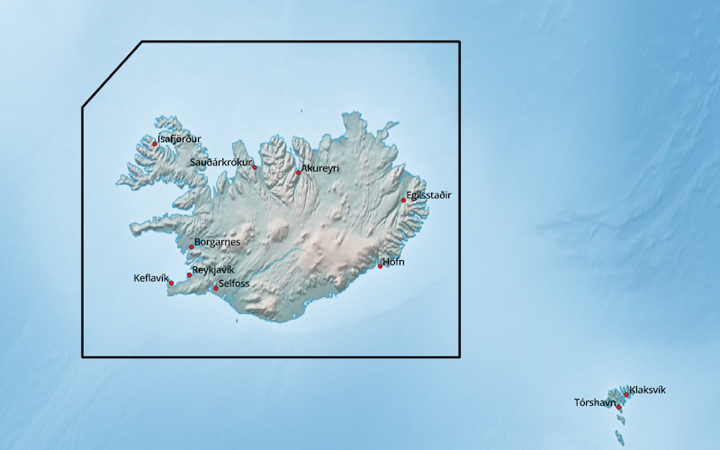

Nordeuropa - verfügbare Karten:
- Königreich Norwegen (NOR)
- Königreich Schweden (SWE)
- Republik Finnland (FIN)
- Dänemark (DNK)
- Island (ISL)
Hinweise zum Download:
- gmapsupp: Installationsimage für Micro-SD-Karte (GPS-Gerät)
- installer: Installationsarchiv für Garmin BaseCamp (Windows)
- gmap: GMAP Archiv für Garmin BaseCamp (macOS)
Königreich Norwegen (NOR):


| Sprache | GPS-Gerät | Windows | macOS |
|---|---|---|---|
| Deutsch | gmapsupp | installer | gmap |
| Englisch | gmapsupp | installer | gmap |
Königreich Schweden (SWE):

| Sprache | GPS-Gerät | Windows | macOS |
|---|---|---|---|
| Deutsch | gmapsupp | installer | gmap |
| Englisch | gmapsupp | installer | gmap |
Republik Finnland (FIN):

| Sprache | GPS-Gerät | Windows | macOS |
|---|---|---|---|
| Deutsch | gmapsupp | installer | gmap |
| Englisch | gmapsupp | installer | gmap |
Dänemark (DNK):

| Sprache | GPS-Gerät | Windows | macOS |
|---|---|---|---|
| Deutsch | gmapsupp | installer | gmap |
| Englisch | gmapsupp | installer | gmap |
Island (ISL):

| Sprache | GPS-Gerät | Windows | macOS |
|---|---|---|---|
| Englisch | gmapsupp | installer | gmap |